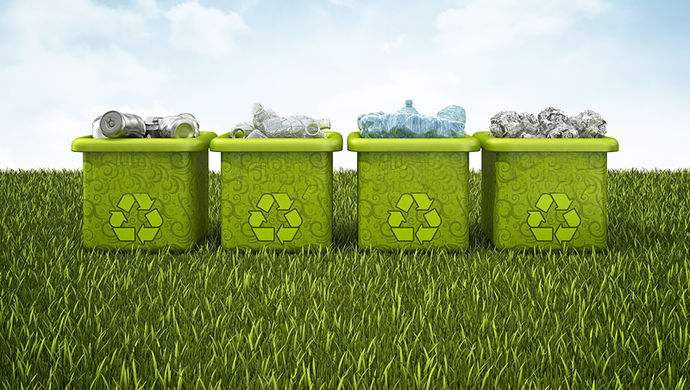

-
主页

-
内容
垃圾识别


垃圾收集
垃圾分类如此繁琐，以前的垃圾直接放在垃圾桶就行了，现在你需要垃圾分类，这将会花费大量的时间。如果有一款App可以让你和以前一样把垃圾放在门口就行了，你不会心动吗？“你是什么垃圾”App会通过垃圾配送员到你的家门口把你的垃圾走并帮您分类。这个App会使中国千千万万市民受益。
垃圾分类
住房和城乡建设部发布的新版《生活垃圾分类标志》标准将于12月1日起实施。与此前版本相比，生活垃圾类别调整为可回收物、有害垃圾、厨余垃圾及其他垃圾4个大类和纸类、塑料、金属等11个小类。 此外，住建部与中国政府网近期将推出“全国垃圾分类”小程序，覆盖全国46个垃圾分类重点城市，市民可通过小程序查询生活垃圾分类，看到各城市当前分类标志情况和新标准标志调整情况。
Copyright © 2019-2019 王森杰 . 备案号：闽ICP备15012807号-1
-
App中心
-
关于我